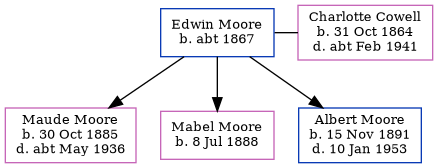

Edwin Moore c1867 -
[ Home ] | [ Calendar ] | [ Surnames Index ] | [ Family History ], Edwin Moore, the husband of Charlotte Priscilla Ann Cowell (the first cousin three-times-removed on the mother's side of Nigel Horne), was born in Malling, Kent, England <i>c.</i> 1867<span class="citation">1,2,3</span> and married Charlotte (a domestic servant with whom he had 3 children: <a href="I1179.html">Maude Rebecca Caroline</a>, <a href="I1178.html">Mabel Emily Charlotte</a> and <a href="I1180.html">Albert Edwin George</a>) at St James the Great, East Malling, Kent, England on Aug 30, 1885<span class="citation">4</span> (Jul/Aug/Sep).</p><p>Throughout his life, Edwin lived in several places: on Standard Road, Bexley, London, England on Apr 5, 1891<span class="citation">5</span>; at Priory Walk, Tonbridge, Kent on Mar 31, 1901<span class="citation">2</span>; and on 5 Alexandra Road, Tonbridge, Kent on Apr 2, 1911<span class="citation">6</span>.
Children
- Maude Rebecca Caroline was born on Oct 30, 1885
- Mabel Emily Charlotte was born on Jul 8, 1888
- Albert Edwin George was born on Nov 15, 1891
Citations
- 1891 England Census Online publication - Provo, UT, USA: The Generations Network, Inc., 2005.Original data - Census Returns of England and Wales, 1891. Kew, Surrey, England: The National Archives of the UK (TNA): Public Record Office (PRO), 1891. Data imaged from The National
- 1901 England, Wales & Scotland Census - Findmypast (was age 35 and the head of the household)
- 1911 England Census Online publication - Provo, UT, USA: Ancestry.com Operations, Inc., 2011.Original data - Census Returns of England and Wales, 1911. Kew, Surrey, England: The National Archives of the UK (TNA), 1911. Data imaged from the National Archives, London, England.
- England & Wales, FreeBMD Marriage Index: 1837-1915 Online publication - Provo, UT, USA: The Generations Network, Inc., 2006.Original data - General Register Office. England and Wales Civil Registration Indexes. London, England: General Register Office. © Crown copyright. Published by permission of the Cont
- 1891 England, Wales & Scotland Census - Findmypast (was age 49 and the head of the household)
- 1911 Census for England & Wales - Findmypast (was age 44 and the head of the household)
Media
1901 England, Wales & Scotland Census - GBC/1901/0006182208
Family Tree
Generated by Ged2Site. Last updated on Jul 20, 2025